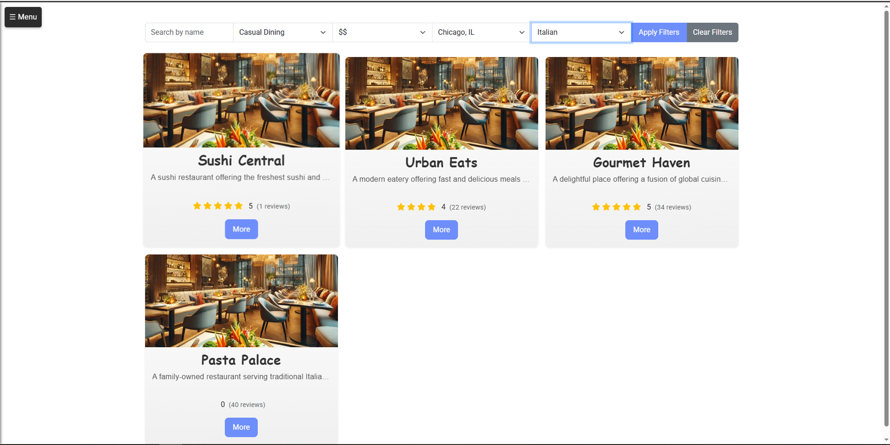
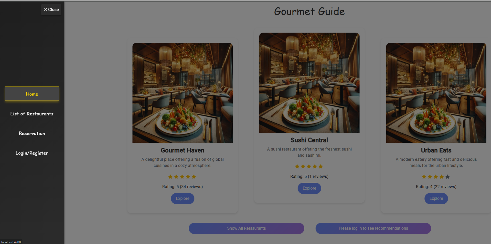
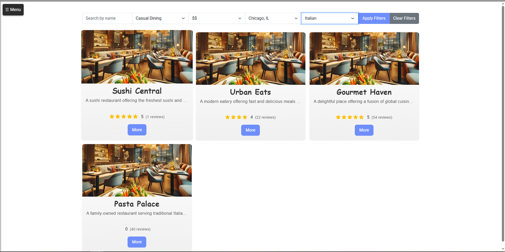
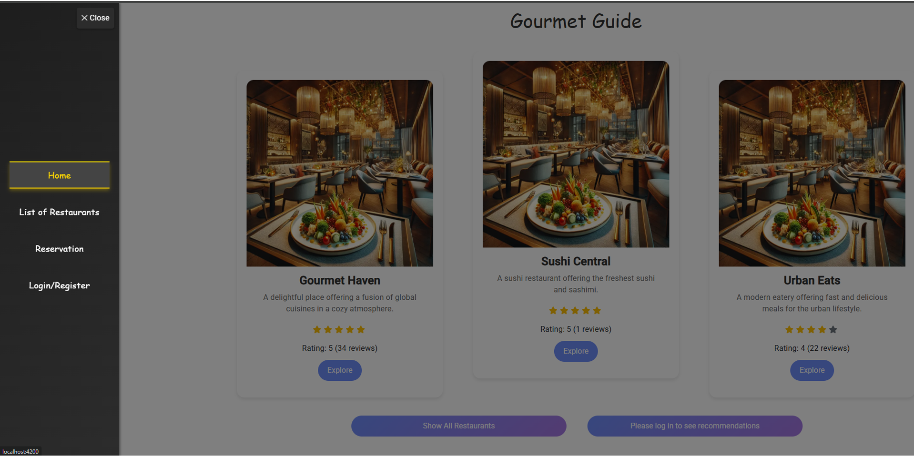
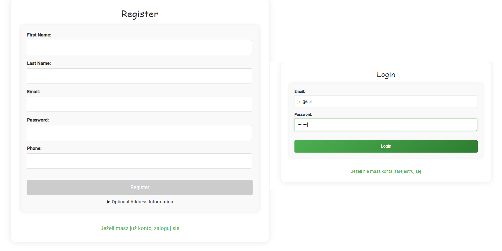
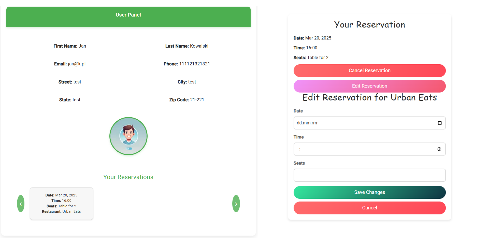
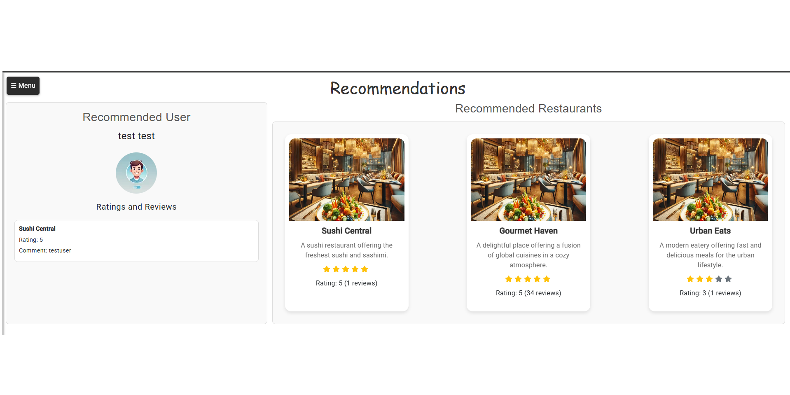
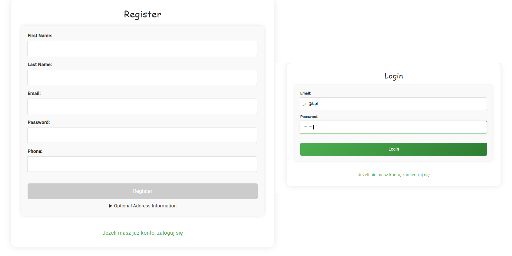
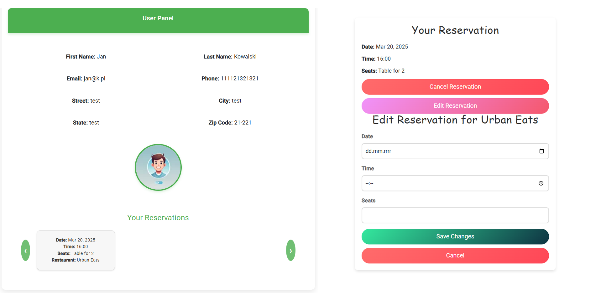
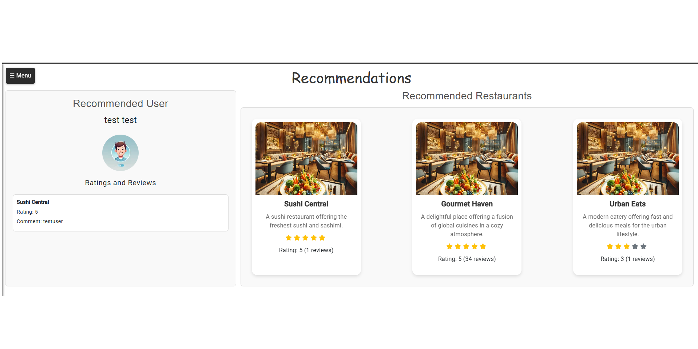

Restauracje
Platforma umożliwiająca przeglądanie restauracji i ich menu, dokonywanie rezerwacji stolików oraz otrzymywanie spersonalizowanych rekomendacji na podstawie opinii innych użytkowników.
- Angular
- TypeScript
- HTML
- CSS
- Node.js
- Firebase
- JWT
Możliwości aplikacji
RestaurantAPP to nowoczesna i responsywna platforma ułatwiająca odkrywanie interesujących lokali gastronomicznych. Użytkownicy mogą przeglądać oferty restauracji, filtrować je według rodzaju kuchni, lokalizacji czy ocen, sprawdzać aktualne menu oraz w prosty sposób rezerwować stoliki online.
System zapewnia spersonalizowane rekomendacje dostosowane do gustu użytkownika. Na podstawie opinii i ocen osób o podobnych preferencjach aplikacja podpowiada restauracje, które mogą okazać się wyjątkowo trafnym wyborem.
Technologie i architektura
Aplikacja umożliwia ocenianie i komentowanie restauracji, a integracja z Firebase zapewnia zapis i synchronizację danych w czasie rzeczywistym, dzięki czemu informacje są zawsze aktualne. Dodatkowo system automatycznie aktualizuje widok użytkownika bez potrzeby odświeżania strony.
Projekt powstał w technologii Angular z backendem w Node.js. Uwierzytelnianie oparte o JSON Web Tokens (JWT) gwarantuje bezpieczeństwo, a nowoczesna architektura pozwala na łatwą rozbudowę i dodawanie kolejnych funkcji.
Fragmenty UI
Strona główna
 




 





Planowane ulepszenia:
- Alternatywne metody logowania
- Powiadomienia o dostępnych rezerwacjach
- Integracja z mapami Google
- Integracja z systemami dostawy jedzenia